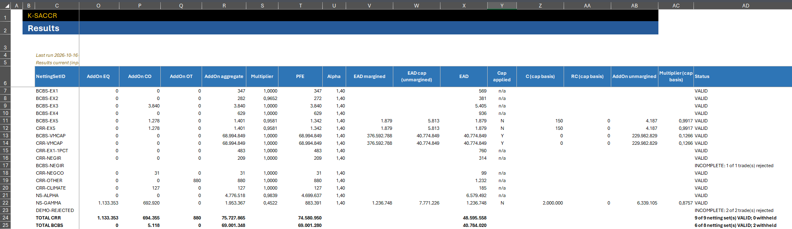
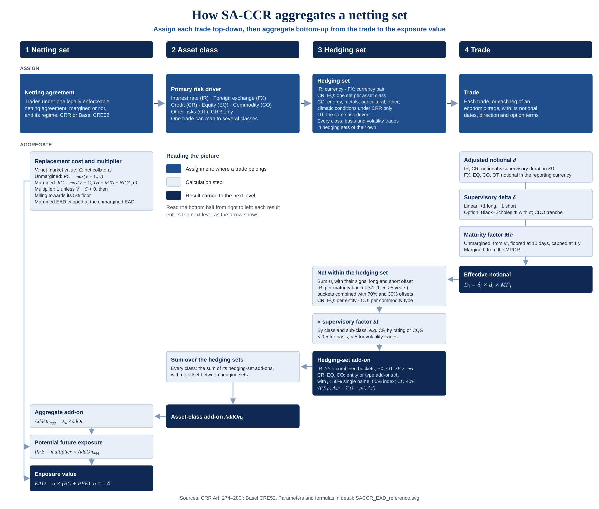
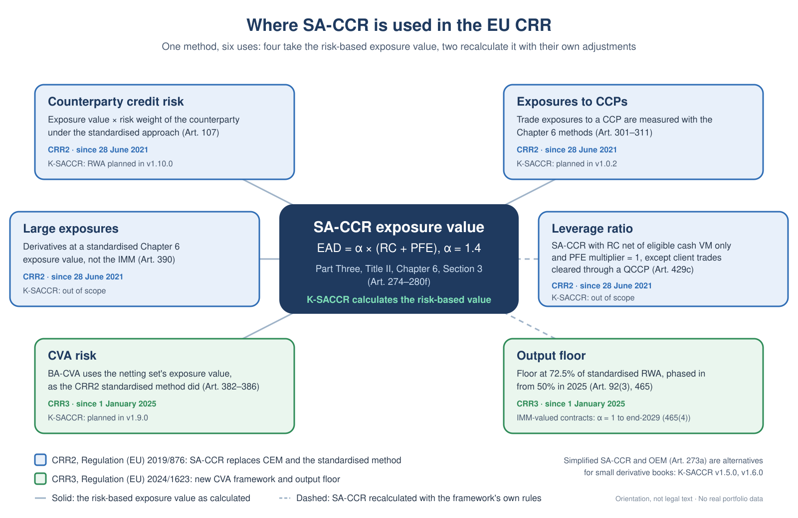

From trades to EAD.
Every step visible.
K-SACCR is an independent toolkit for calculating, inspecting, and reconciling SA-CCR exposure under EU CRR and Basel CRE52.
Explore the calculation in Excel, trace its methodology, and review the VBA behind every result.
Release 1.0.2 · Windows desktop Excel · No real portfolio data
Downloaded the workbook? Check its SHA-256 against SHA256SUMS.txt and unblock it before you open it.
Follow the number back to the trade.
SA-CCR is the Standardized Approach for Counterparty Credit Risk. K-SACCR brings its inputs, intermediate quantities, and netting-set results into one reviewable Excel workflow.
- 01
Enter & validate
Define netting sets, trades, and run parameters. Review rejected inputs and the reasons reported on the Checks sheet.
- 02
Calculate & trace
Inspect adjusted notionals, supervisory deltas, maturity factors, hedging sets, add-ons, replacement cost, PFE, and EAD.
- 03
Reconcile & explain
Compare reference results by netting set and trade leg, investigate differences, and export the calculation evidence.

Two regimes.
Explicit assumptions.
EU CRR is the default regime; Basel CRE52 is also supported. The selected regime is reported with the result. Documented differences cover asset classes, supervisory parameters, options, and aggregation.
Replacement cost captures current exposure. Potential future exposure uses the aggregate add-on and PFE multiplier. The methodology documents margin treatment, the unmargined cap, and other supported rules.
Know what has been validated.
- Basel: regression against published CRE99 examples supports validation of the covered Basel rules.
- CRR: implemented and tested against illustrative values; not independently validated.
- Engineering checks: formula, input-validation, aggregation, state, reconciliation, and invariant tests complement numerical benchmarks.
- Scale: a synthetic portfolio of 500,000 trade legs in 1,000 netting sets calculated in under two minutes, every leg used; times depend on the machine.
Release 1.0.2. Its source was certified in Excel before tagging: compile and all eight test suites. That is software evidence, not regulatory approval, which the project does not claim.


One method, six uses.
In the EU CRR, the SA-CCR exposure value of a netting set feeds counterparty credit risk under the standardised approach, exposures to CCPs, large exposures, and CVA risk. The leverage ratio and the output floor recalculate SA-CCR with their own adjustments. K-SACCR calculates the risk-based exposure value at the centre; the diagram marks which uses are on its roadmap and which are out of scope.
- Leverage ratio: α stays 1.4, the PFE multiplier is 1, and replacement cost recognises only eligible cash variation margin, with exceptions for client trades cleared through a QCCP (Art. 429c).
- Output floor: until 31 December 2029, α = 1 only for exposures whose un-floored value comes from the internal model method (Art. 465(4)).

Explore. Build. Review.
The workbook is built from a macro-free template and exported VBA modules. Start with the installation guide, then use the methodology and tests to understand its behavior.
What should I know before using K-SACCR?
Use Windows desktop Excel and follow your organization's macro policy. The repository holds no real portfolio data; keep yours out of issues and pull requests. The project does not currently implement simplified SA-CCR, the original exposure method, CCP default-fund calculations, securities financing transaction exposure methods, CVA, or RWA calculations. Additional product and modeling limitations are listed in the repository README and support matrix.